Deep Dive — the romantic-feminine summer is here, and it belongs to MAMC.
✓ Store verified: Canton CollectiveRun date 25 Jun 2026Mode Deep DiveSignals 12 social/community searches + 28d/14d sales + catalog matchLedger baseline run appended
Cross-label pattern
The entire Summer-2026 trend stack — watercolor florals, lace-trim slip, subverted polka dots, coquette babydoll, jumbo gingham — clusters in the romantic-feminine register, i.e. MAMC's exact wheelhouse. That's why MAMC just overtook 1Jinn in trailing-2-week GMV (+46%). The zeitgeist this fortnight is romantic-feminine, not alt/Y2K.
Highest-leverage opportunity
Put homepage + email (underutilized, ~$744 attributed) weight behind MAMC's watercolor-floral & lace-slip movers now. The Lavender Floral Chiffon Slip Mini (already store #1, $1,781 / 30 ord) and Dusty Rose Gauze Bandeau ($1,509 / 26 ord) are peaking external trends with proven on-site velocity — the lowest-risk push in the store.
Vendor momentum · 14-day GMV vs prior 14 days
MAMC+46% ▲ #1
1Jinn Studio−20% ▼
Deleteex+7% ▶
2th Desire−40% ▼
First Floor−34% ▼
Outtheblue+209% ▲
Push Now Peaking + SKUs already climbing — no lead-time risk
Promote matching in-stock products hard (ads, TikTok, homepage, email). Each trend below carries ≥2 social signals and a named in-stock SKU with live order velocity.
Watercolor / painterly florals
MAMCHighPeaking · the new boho
Signal: WhoWhatWear / Maidenbloom (Jun'26) name "painterly botanicals, soft watercolour washes" as the rich-summer dress story; moody florals replacing neon tie-dye. CC proof: MAMC's floral slips are the engine of its +46% surge — the Lavender Floral Slip is the store's #1 mover.
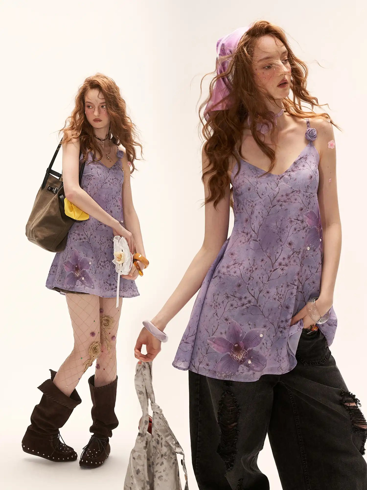
★ Store #1 mover
MAMC
Lavender Floral Chiffon Slip Mini Dress
$1,781 · 30 ord / 14d
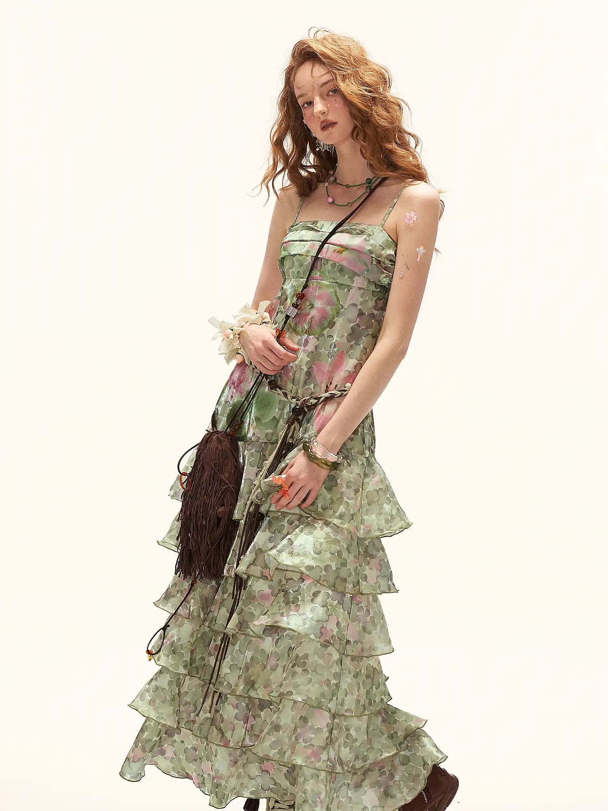
MAMC
Green Tiered Ruffle Layers Midi Slip Floral Dress
catalog depth · push
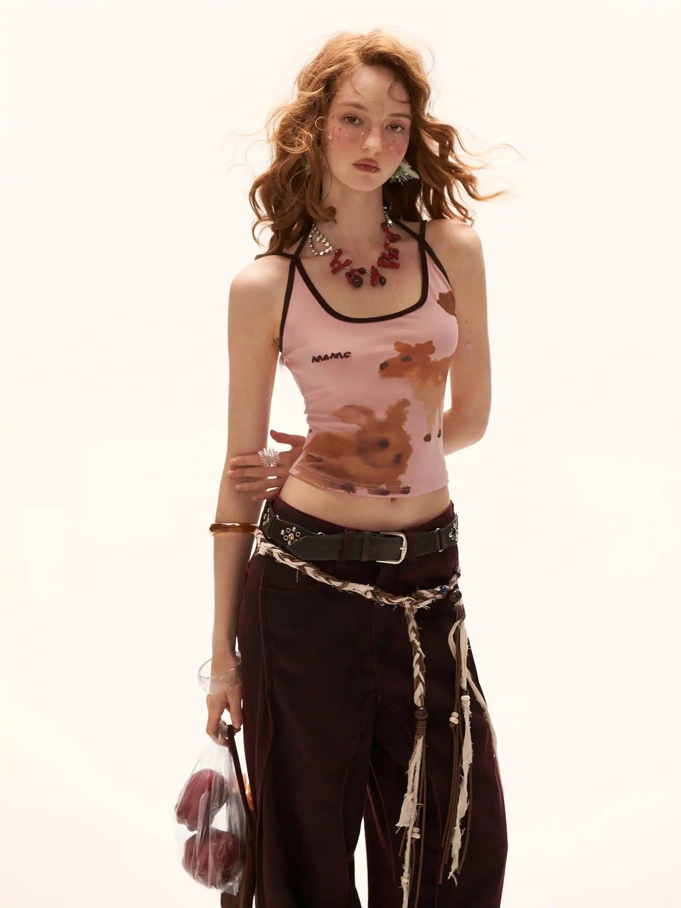
MAMC
Watercolor Animal Prints Pink Halter Top
$374 · 12 ord / 14d
Lace slip & boudoir romantic
MAMCHighPeaking · "the dress trend of 2026"
Signal: WhoWhatWear calls the lace slip dress "the dress trend of 2026"; the lace-trim slip skirt = "romantic girl summer"; SS26 runways Blumarine / Dolce & Gabbana stacked lace inserts & strategic sheerness (nss G-Club, Jun'26). CC proof: MAMC lace/sequin camis already converting on-site.
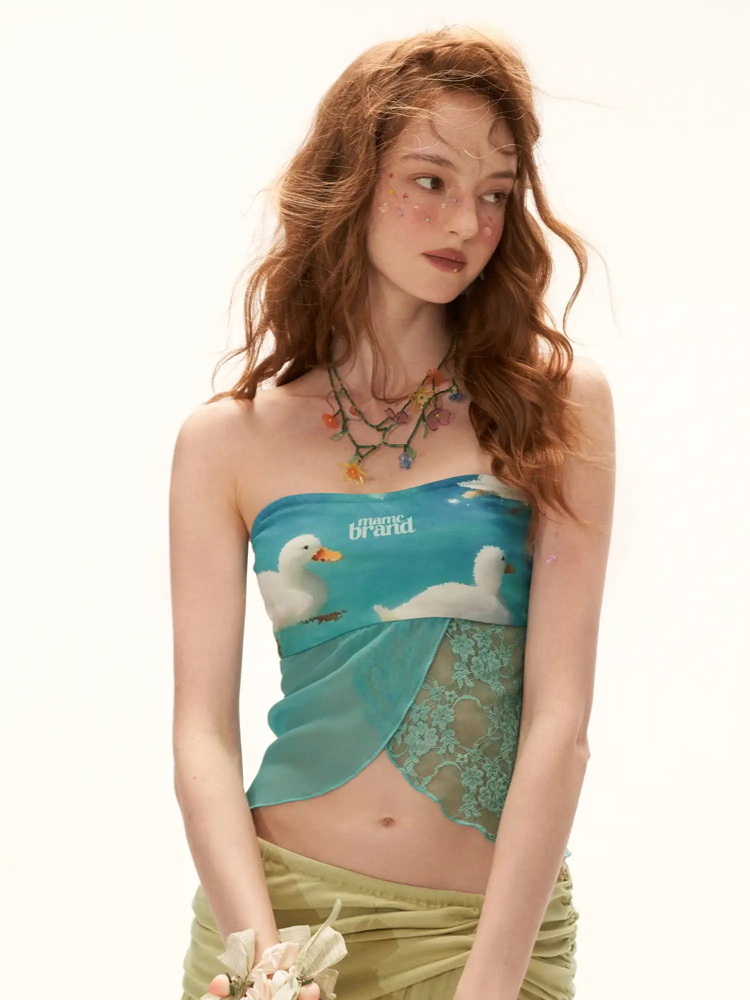
MAMC
Flyaway Lace-Trim Blue Tube Top
lace-trim · push
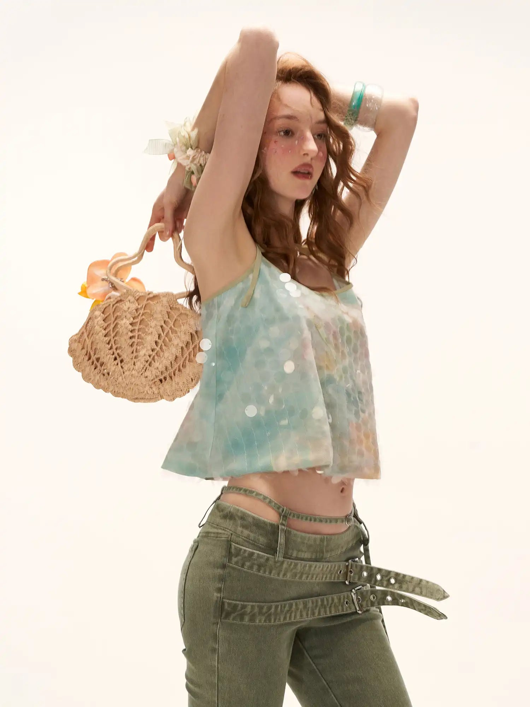
MAMC
Sequin Mesh Overlay Tie Strap Camisole Top
$269 · 6 ord / 14d
Coquette babydoll & satin bows
MAMC1JinnHighPeaking · #balletcore 500M+
Signal: #balletcore 500M+ views, "trend of 2026" (VogueHK, Urban Outfitters, BrandVision); evolving to dark-coquette + satin-ribbon styling. Babydoll & satin-bow silhouettes peaking for summer. CC proof: Satin Red Babydoll Tee a top-10 MAMC mover.
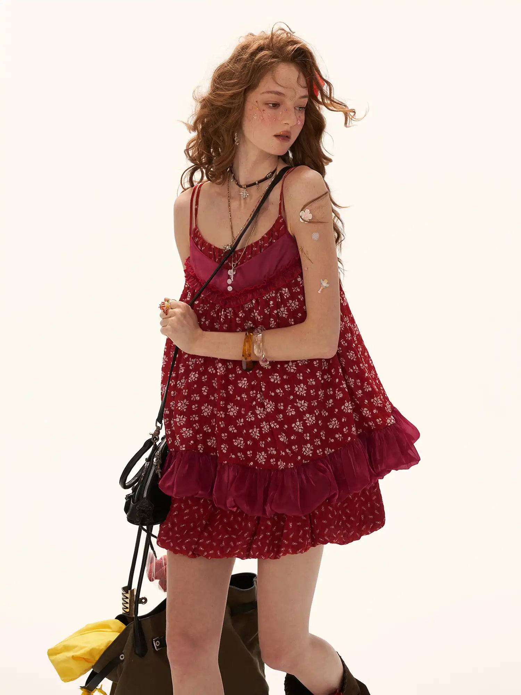
MAMC
Vintage Satin Red Bubble Hem Baby Doll Tee
$520 · 9 ord / 14d
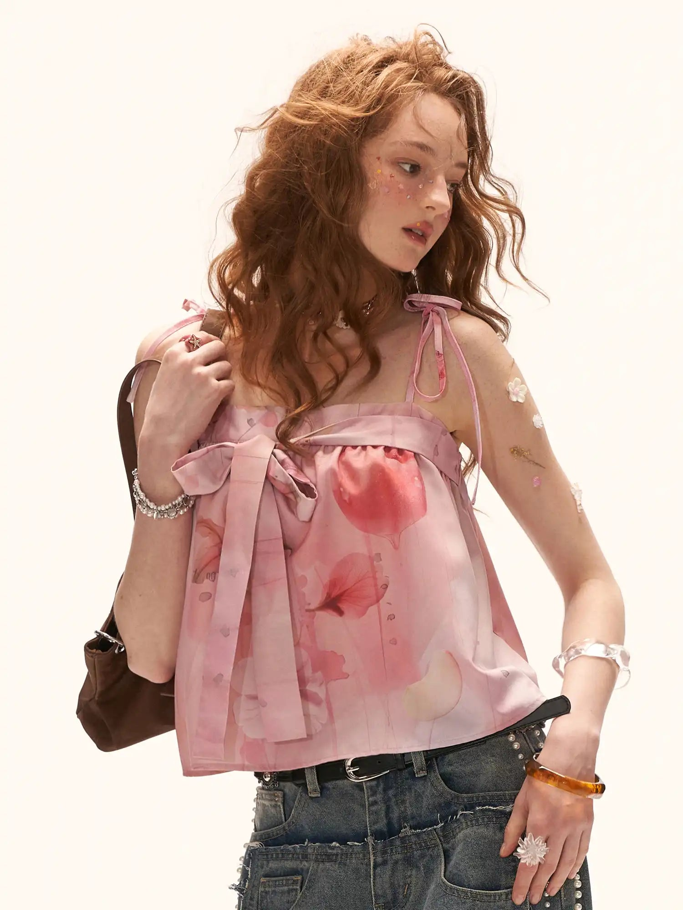
MAMC
Bow Knot Pink Babydoll Cami Top
bows · push
Subverted polka dots
2th Desire1JinnHighPeaking · Vogue "Summer of Subverted Polka Dots"
Signal: Vogue named 2026 the "Summer of Subverted Polka Dots"; defining SS26 print across Khaite, Altuzarra, Christian Siriano, with jumbo "coin spots" (WhoWhatWear, The Glossary). CC proof: polka pieces live across 2th Desire, 1Jinn & MAMC — and the deconstructed off-shoulder fits 2TH's read perfectly.
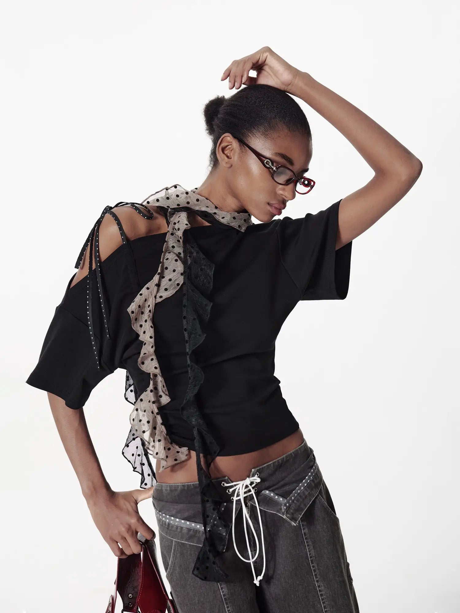
2th Desire
Deconstructed Spliced Polka Dot Off-Shoulder Top
87 units in stock · push
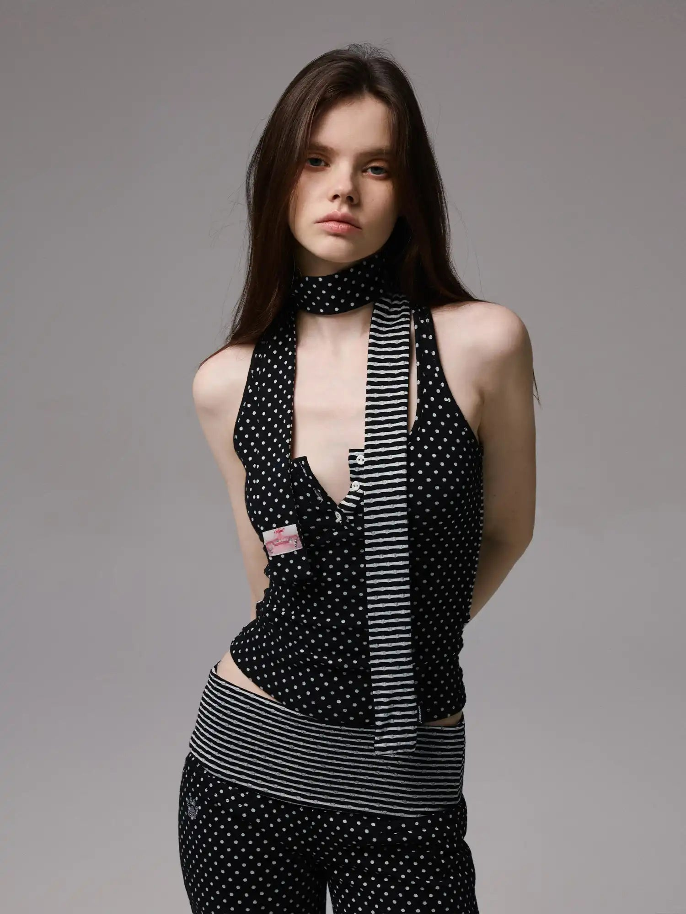
1Jinn Studio
Polka Dot Racerback Tank
blokette-adjacent · push
Jumbo gingham & check
MAMC1JinnHighPeaking · "2026's summer print"
Signal: Woman&Home / FABLStyle (Jun'26) call check "2026's most compelling summer story" — jumbo squares, "soft-luxury Euro-summer." CC proof: MAMC's Glen Check trousers & gingham babydoll already in the 14-day top movers; plaid depth across lines.
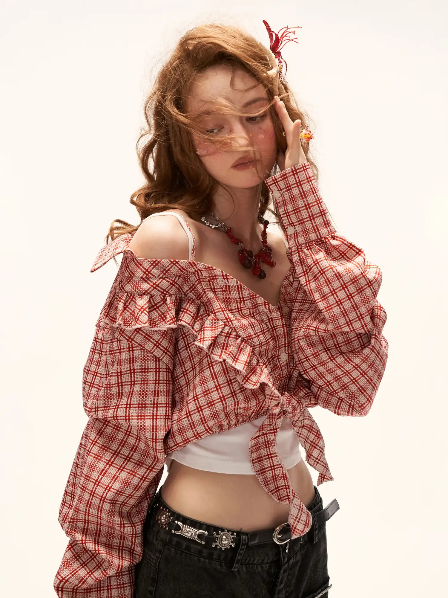
MAMC
Lace-Up Plaid Bardot Top
check × coquette · push
1Jinn Studio
Chic Low-Waist Plaid Skirt
low-rise check · push
Mermaidcore / "Summer Siren"
Deleteex1JinnHighPeaking · designer-backed
Signal: Peaking & elevated to "Summer Siren" with Versace & Chanel Cruise backing; starfish / shell / pearl, sheer, sequins, sunset hues (WhoWhatWear, Harper's Bazaar, Jun–Jul'26). CC proof: Deleteex's Starfish skirt & Hibiscus tee are live 14-day movers — CC owns this coastal-Y2K corner.
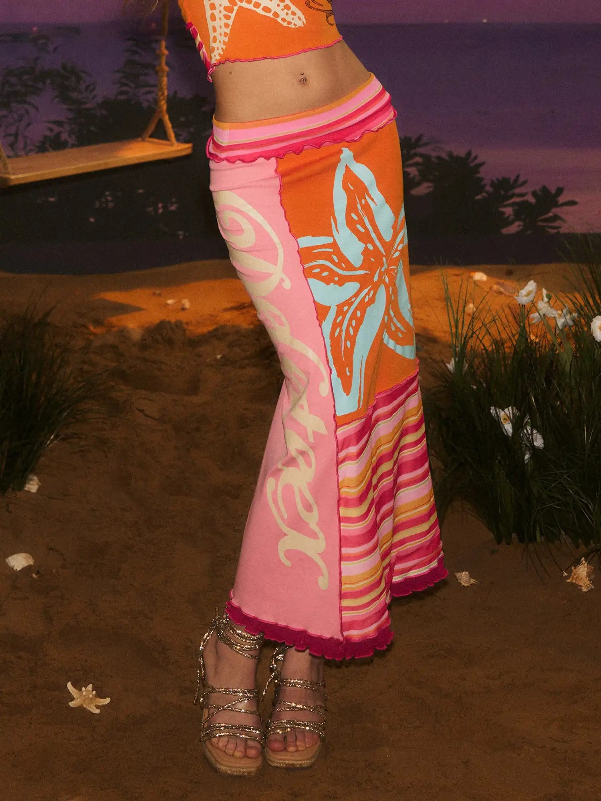
Deleteex
Y2K Starfish Foldover Maxi Skirt
$348 · 8 ord / 14d
Deleteex
Y2K Hibiscus Sheer V Neck Baby Tee
$315 · 8 ord / 14d
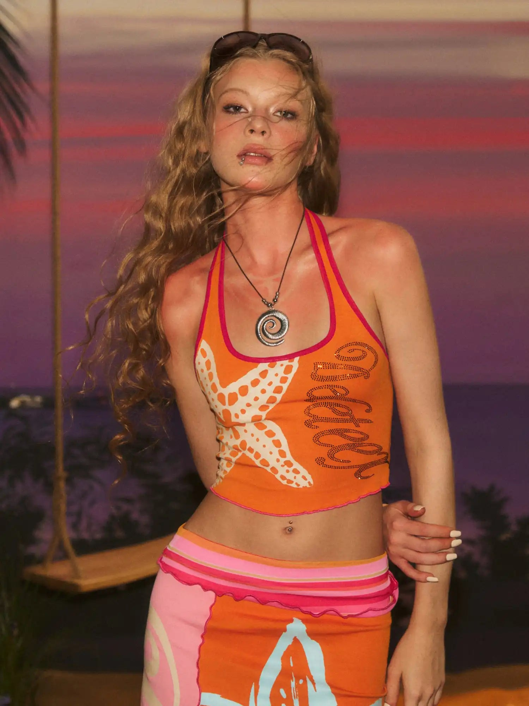
Deleteex
Starfish Rhinestone Halter Backless Top
shell/rhinestone · push
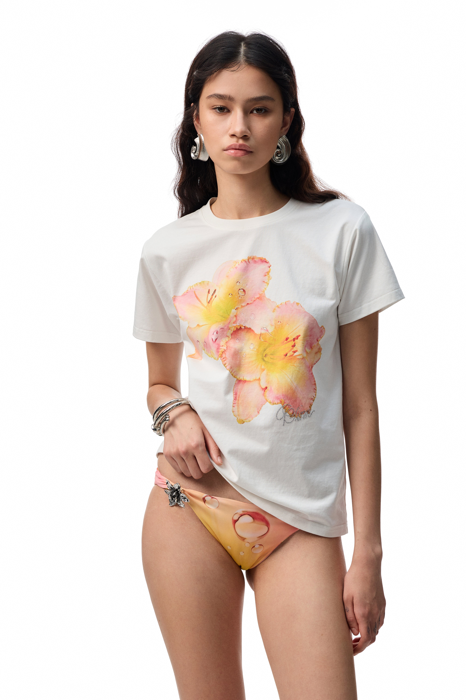
1Jinn Studio
Petal Tide Graphic Loose Tee
shell graphics · push
Position Early Rising, not yet peaked — feature now, flag for buying
Runway exists by definition. Feature matching products ahead of the crest and raise the sourcing note with the sub-brand for the next drop.
Acubi (C / K-fashion)
1JinnMedRising · home-turf for CC's Asia base
Signal: Seoul streetwear, Blackpink / NewJeans / Aespa-driven; neutral muted layering, low-rise, wide-leg (CNN, Jun'26). Doubly relevant — CC's Japan / AU customers are its home turf. CC proof: the Acubi Layered Polo is already a 1Jinn 14-day mover.
1Jinn Studio
Acubi Style Layered Polo Top
$252 · 7 ord / 14d
Vamp Romantic / Romantic Gothic
DeleteexMAMCMedRising · named in Pinterest Predicts 2026
Signal:Pinterest Predicts 2026 names "Vamp Romantic" (goth with a sweet twist); market data shows corsets +43%, fishnet bodysuits +86%, velvet tops +90%; Ann Demeulemeester's Victorian-lace pre-fall (PAPER, FashionUnited). CC proof + sourcing note: Deleteex's Shell-Button Puff Shirt is its top mover — flag corset / lace-collar depth for the next Deleteex drop.
Deleteex
Distressed Lace Corsage
distressed lace · position
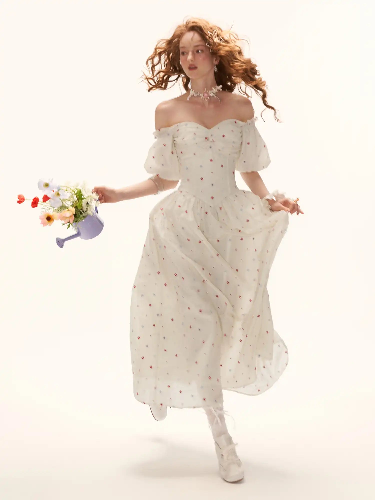
MAMC
Cream Twisted Strapless Corset Dress
corsetry +43% · position
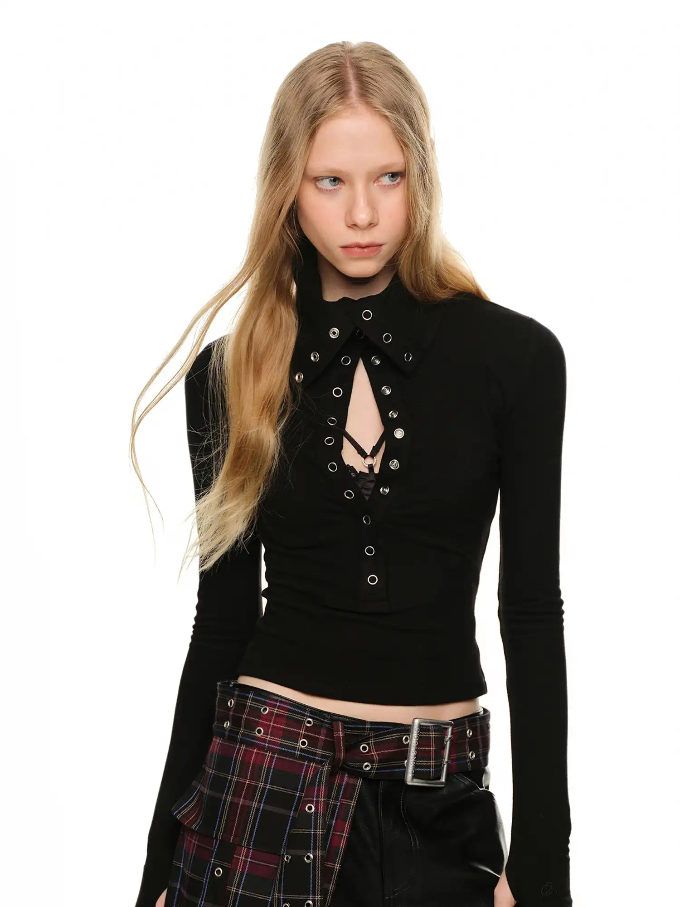
1Jinn Studio
Fold & Frame Turtleneck (gothic lace-up)
$267 · 6 ord / 14d
Blokette (bloke + coquette)
2th DesireMedRising · thin catalog → buying flag
Signal: jersey × frilly-skirt × bows × Sambas; women's-sports-fandom driver (PureWow, Parade). CC reality: CC has little sporty core — but it does hold the Y2K Blokette Jersey Tee. Feature it, and treat the rest as a sourcing conversation with the sub-brands rather than a broad on-site push.
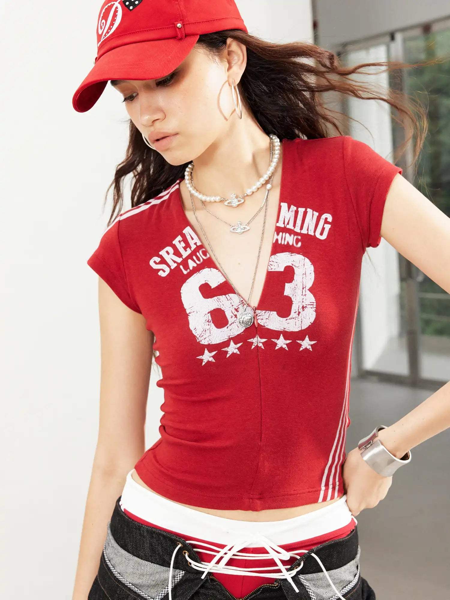
2th Desire
Y2K Blokette Jersey Tee
only blokette SKU · position
Watch / Nuance
Y2K beaded-sequin (pure-play)Hot on-site (1Jinn's $1,047 Beaded Multi-Strap mover) but resale plateauing toward "Fundamental Dressing" on Depop. Push while hot — do not over-reorder.
Outtheblue +209%Fastest % climber but tiny base (~$967) and undocumented aesthetic. Confirm live catalog next run before assigning trends.
2th Desire −40% & First Floor −34%Cooling alt / minimalist lines. The polka + retro-cami push is 2TH's lever to arrest decline; First Floor stays deprioritized.